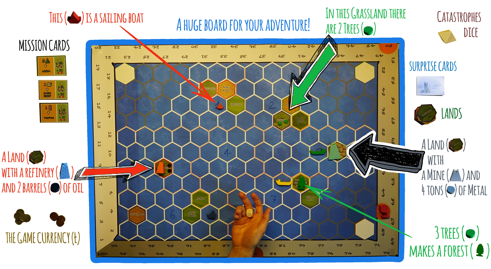

Carbon Matters
Motivation
Maritime transport is essential for today's global economy. More than 90% of world trade is still conducted by sea. Nevertheless, ships are today allowed to pollute the air 3,500 times more than land transport vehicles. The pollution caused by maritime transport goes unnoticed, as it occurs mostly on the high seas. 15 of the largest ships in the world emit as much air pollution as 760 million cars. Only one of these large ships can emit almost as much toxic pollutants as 50 million cars. This is because large ocean-going ships use very dirty fossil fuels for their propulsion. Heavy fuel oil used by large ocean-going vessels contains large amounts of sulfur, ash, heavy metals and other toxic waste. When it is burned, in addition to CO2, large quantities of sulfur oxides, nitrogen oxides and particles are released, which are highly dangerous pollutants for human health. Maritime transport is responsible for 15% of global man-made emissions.
Imagine rewriting the history and future of international maritime trade while avoiding its dire consequences for the environment. Take a journey from the times of sailing ships to a new era of solar energy ships and let yourself be surprised! What would you do in a different way?
With this game you can design a new world of islands, build boats and ships, transport materials, be rich and powerful while saving the planet. Beat your fellow players without destroying the world! Are you able to complete your missions and keep the planet clean at the same time? Will anyone be able to work with you to save the planet, or will everyone play to their own advantage?
Game Design
The game integrates two different theoretical models, a collaborative and a competitive model.
While each player has to fulfill her individual goal to win the game, there is a common goal for all players, namely the preservation of our planet.
The impact we have on our environment is simulated by a CO2 bar: when this is completely filled, the game is over for all players.
We believe that integrating different models and strategies adds an educational aspect to the game by stimulating creative and lateral thinking.
For example, one can play against all the others so that everyone loses.
Of course, this is a possibility, and it is part of the strategy of the game to keep the game balanced and not create too much inequality between the players.
On the one hand, this creates a funnier game in which everyone is involved; on the other hand, it simulates how you would be in a more powerful position even if you were in a more powerful position due to luck or hard work,
your job is also to make sure that everyone is on board, even if you want to win for yourself.

The animation above describes the relationship between human activity and the contamination (in the form of CO2) of our planet.
Before the industrial revolution, the level of contamination is obviously negligible.
With the industrial revolution, the level of pollution due to the consumption of fossil fuels (among other things) begins to increase until it reaches a break-point.
At this stage, we find ourselves in a dilemma: either we continue the lifestyle achieved during the Industrial Revolution with the risk of destroying our planet, or we drastically change our habits by changing our energy sources.
We have tried to translate this curve into the game dynamics. The game consists of completing missions by using boats to transport material from port to port. In the first part of the game only sailing boats are available. They use wind energy and can only transport one material at a time. These boats are very environmentally friendly and not very economically efficient. The second part is about developing faster diesel boats. These boats can transport two types of materials at the same time and can complete the missions faster than the sailing boats. Nevertheless they emit a larger amount of environmentally harmful gases. They are not very environmentally efficient, but they are very economically efficient. The third level of the game is represented by the solar boats. They can fulfill three missions at the same time. They produce a smaller amount of polluting gases than diesel boats, and they are faster than them. They are environmentally efficient, but not as economically efficient as diesel boats. In the game, every player faces the dilemma: Am I doing something for myself or for the planet?

Will the players follows our simulated model or will they destroy the world?
Carbon Matters
Anregung
Der Seeverkehr ist für die heutige Weltwirtschaft von wesentlicher Bedeutung. Noch immer werden mehr als 90% des Welthandels auf dem Seeweg abgewickelt. Dennoch dürfen Schiffe heute die Luft 3.500 Mal stärker verschmutzen als Landtransportfahrzeuge. Die durch den Seeverkehr verursachte Verschmutzung bleibt unbemerkt, da sie größtenteils auf hoher See geschieht. 15 der größten Schiffe der Welt emittieren so viel Luftverschmutzung wie 760 Millionen Autos. Nur eines dieser großen Schiffe kann fast so viel giftige Schadstoffe ausstoßen wie 50 Millionen Autos. Das liegt daran, dass große Hochseeschiffe sehr schmutzige fossile Brennstoffe für ihren Antrieb verwenden. Schweres Heizöl, das von großen Seeschiffen verwendet wird, enthält große Mengen an Schwefel, Asche, Schwermetallen und anderen toxischen Abfällen. Bei seiner Verbrennung werden neben CO2 auch hohe Mengen an Schwefeloxiden, Stickoxiden und Partikeln freigesetzt, die hochgefährliche Schadstoffe für die menschliche Gesundheit darstellen. Der Seeverkehr verursacht 15% der weltweiten, vom Menschen verursachten Emissionen.
Stellen Sie sich vor, Sie würden die Geschichte und die Zukunft des internationalen Seehandels neu schreiben und gleichzeitig seine schrecklichen Folgen für die Umwelt vermeiden. Machen Sie eine Reise aus der Zeit der Segelschiffe in eine neue Ära der Solarenergieschiffe und lassen Sie sich überraschen! Was würden Sie auf eine andere Art und Weise tun?
Mit diesem Spiel können Sie eine neue Welt aus Inseln entwerfen, Boote und Schiffe bauen, Materialien transportieren, reich und mächtig sein und gleichzeitig den Planeten retten. Schlagen Sie Ihre Mitspieler, ohne die Welt zu zerstören! Sind Sie in der Lage, Ihre Missionen zu erfüllen und gleichzeitig den Planeten sauber zu halten? Wird jemand mit Ihnen zusammenarbeiten können, um den Planeten zu retten, oder wird jeder zu seinem eigenen Vorteil spielen?
Spiel Design
Das Spiel integriert zwei verschiedene theoretische Modelle, ein kollaboratives und ein konkurrierendes Modell.
Während jeder Spieler sein individuelles Ziel erfüllen muss, um das Spiel zu gewinnen, gibt es für alle Spieler ein gemeinsames Ziel, nämlich die Erhaltung unseres Planeten.
Der Einfluss, den wir auf unsere Umwelt haben, wird durch einen CO2-Balken simuliert: Wenn dieser vollständig ausgefüllt ist, ist das Spiel für alle Spieler beendet.
Wir glauben, dass die Integration verschiedener Modelle und Strategien dem Spiel einen erzieherischen Aspekt hinzufügt, indem kreatives und laterales Denken angeregt wird.
Ich kann zum Beispiel gegen alle anderen spielen, so dass alle verlieren.
Natürlich ist dies eine Möglichkeit, und es ist Teil der Strategie des Spiels, das Spiel ausgewogen zu halten und nicht zu viel Ungleichheit zwischen den Spielern zu schaffen.
Einerseits wird dadurch ein lustigeres Spiel geschaffen, an dem alle beteiligt sind, andererseits wird simuliert, wie Sie in einer mächtigeren Position wären, selbst wenn Sie durch Glück oder harte Arbeit in einer stärkeren Position wären,
Ihre Aufgabe ist es auch, dafür zu sorgen, dass alle mit an Bord sind, auch wenn Sie für sich selbst gewinnen wollen.
Die obige Animation beschreibt die Beziehung zwischen menschlichen Aktivitäten und der Kontamination (in Form von CO2) unseres Planeten.
Vor der industriellen Revolution war der Grad der Kontamination offensichtlich vernachlässigbar.
Mit der industriellen Revolution beginnt der Grad der Verschmutzung durch den Verbrauch von fossilen Brennstoffen (unter anderem) zu steigen, bis er einen Bruchpunkt erreicht.
In diesem Stadium befinden wir uns in einem Dilemma: Entweder wir setzen den während der industriellen Revolution erreichten Lebensstil fort mit dem Risiko, unseren Planeten zu zerstören, oder wir ändern unsere Gewohnheiten drastisch, indem wir unsere Energiequellen ändern.
Wir haben versucht, diese Kurve in die Spieldynamik zu übersetzen. Das Spiel besteht darin, Missionen zu erfüllen, indem man mit Booten Material von Hafen zu Hafen transportiert. Im ersten Teil des Spiels stehen nur Segelboote zur Verfügung. Sie nutzen Windenergie und können jeweils nur ein Material transportieren. Diese Boote sind sehr umweltfreundlich und wenig wirtschaftlich effizient. Im zweiten Teil geht es um die Entwicklung schnellerer Dieselboote. Diese Boote können zwei Arten von Materialien gleichzeitig transportieren und die Missionen schneller erfüllen als die Segelboote. Dennoch stoßen sie eine größere Menge an umweltschädlichen Gasen aus. Sie sind wenig umwelteffizient, aber sehr ökonomisch effizient. Die dritte Stufe des Spiels stellen die Solarboote dar. Sie können drei Missionen gleichzeitig erfüllen. Sie produzieren eine geringere Menge an umweltschädlichen Gasen als Dieselboote, und sie sind schneller als diese. Sie sind umwelteffizient, aber nicht so ökonomisch effizient wie die Dieselboote. Im Spiel steht jeder Spieler vor dem Dilemma: Tue ich etwas für mich selbst oder für den Planeten?
Werden die Spieler unserem simulierten Modell folgen oder werden sie die Welt zerstören?